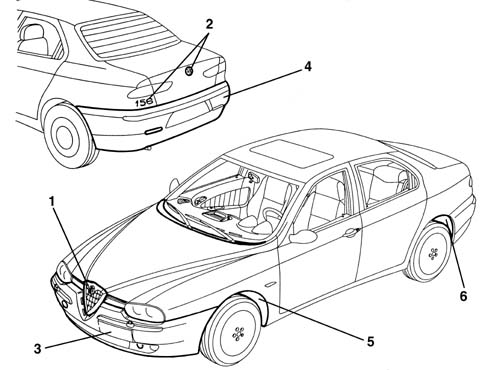

Introduction - MOULDING AND PROTECTION
- Path
- Descriptions > 70 FITTINGS > 7055 MOULDING AND PROTECTION > Introduction - MOULDING AND PROTECTION
- Kind
- system description
- Applies to
- all engines; all production periods
- Interactive page
- https://sloeber94.github.io/elrnDB-a156/en/#/3239245
Applies to: all engines; all production periods
Polypropylene
Crystalline thermoplastic resin obtained from the polymerization of propylene. This material is hard and tough, resistant to humidity, oils and solvents and withstands temperatures of up to 170° C.
VIEW OF ASSEMBLY
The diagram shows the entire subassembly

1, Front finishing trim 2, Rear finishing trim 3, Front bumper 4, Rear bumper 5, Front supplementary wheel arch 6, Rear supplementary wheel arch
DESCRIPTION
The bumpers, made from polypropylene (*) and body-coloured, constitute an important element of the car and enhance its sporty styling. Both bumpers contain soft impact resistant inserts. The off-centre housing for the number plate is a feature of the front bumper.
The wheel housings are protected by special plastic shields.
The other elements (grilles, badges, trims, etc.) are designed to enhance the spirit of the vehicle.